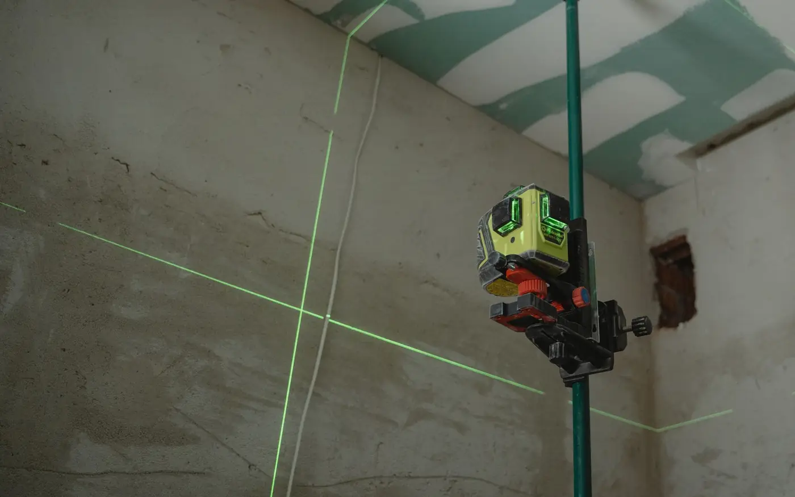
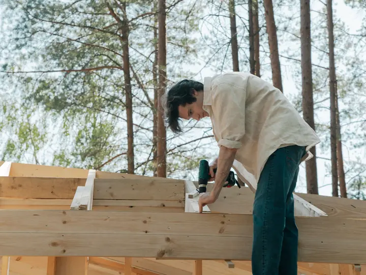
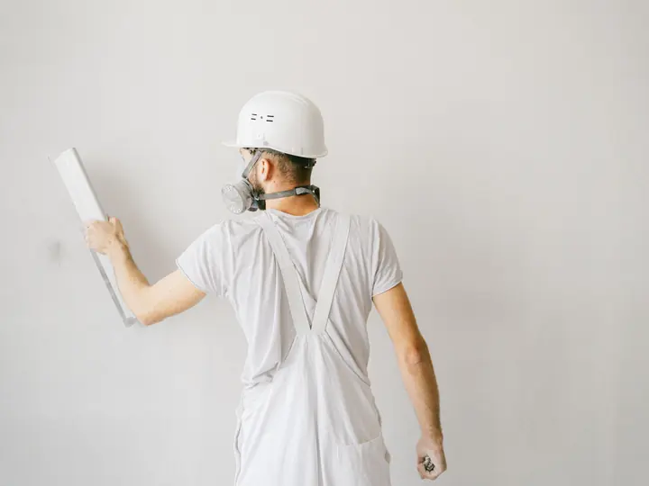
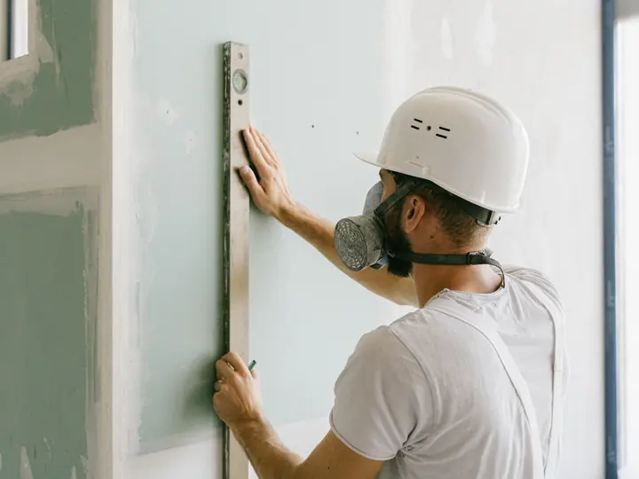
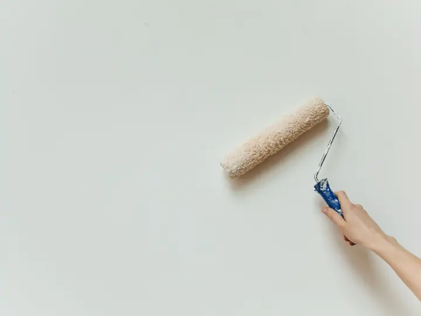
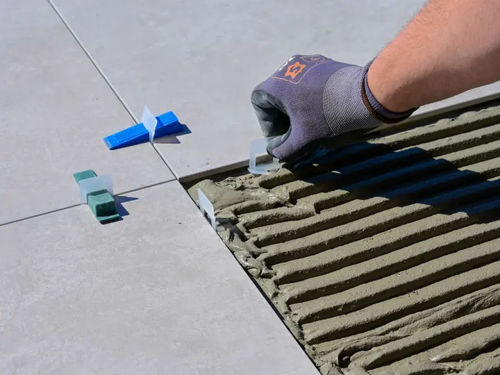
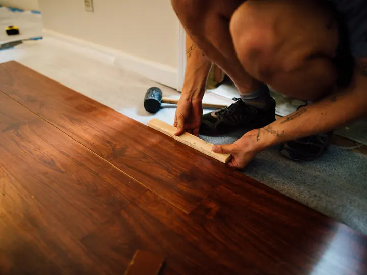
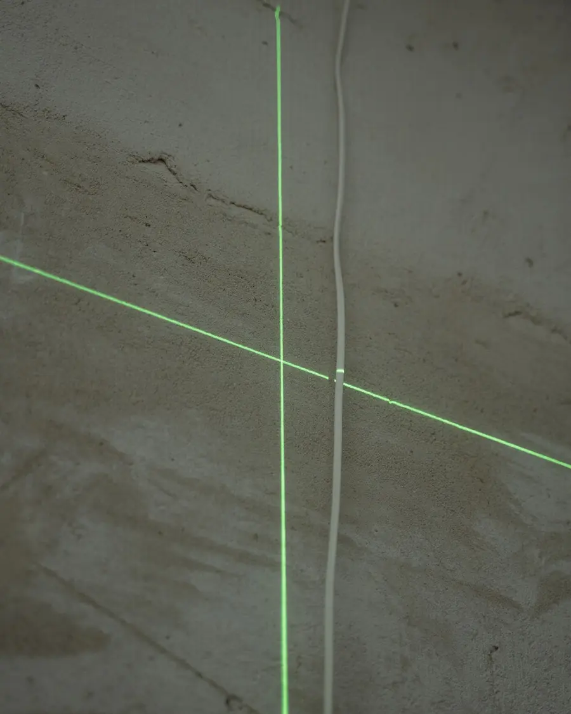
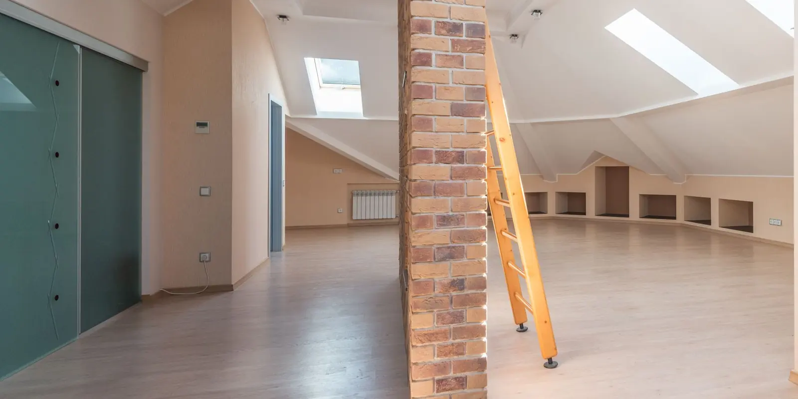
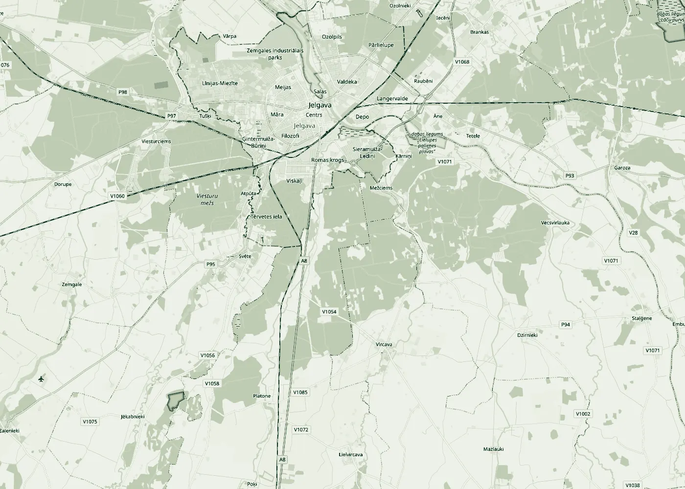

Līmenis pirms apdares
Ēku būvniecība · Iekšdarbu apdare · Jelgavas novads
No sienām līdz gatavai telpai.
SIA „Fast Building” būvē ēkas un veic iekšējās apdares darbus: apmetumu, ģipškartonu, špaktelēšanu, krāsošanu, flīzes un grīdas. Atrodamies Vircavas pagastā, strādājam Jelgavā un apkārtnē.
- Reģistrēts
- 2018. gadā
- Būvkomersants
- BIS reģ. Nr. 19034
- Komanda
- 7 darbinieki (2024)
- Atrašanās vieta
- Vircavas pagasts
01Pakalpojumi
Būvējam un pabeidzam
Ēkas būvniecība un apdares darbi vienā uzņēmumā: nav jāmeklē atsevišķa brigāde katram posmam.
-

01Ēku būvniecība
Privātmājas, palīgēkas un piebūves no pamatiem līdz jumtam. Darbus plānojam tā, lai pēc tam varētu uzreiz turpināt ar apdari.
-

02Apmetums un špaktele
Sienu un griestu apmešana, špaktelēšana un slīpēšana, lai virsma būtu gluda un taisna zem krāsas vai tapetēm.
-

03Ģipškartona konstrukcijas
Starpsienas, piekārtie griesti, nišas un sienu apšuvums, arī ar skaņas vai siltuma izolāciju.
-

04Krāsošana
Gruntēšana un krāsošana mājās, dzīvokļos un birojos. Pirms darba nosedzam grīdas, logus un visu, kas jāpasargā.
-

05Flīzēšana
Vannas istabas, virtuves un priekšnami: pamatnes sagatavošana, hidroizolācija, flīzēšana un šuvošana.
-

06Grīdas
Grīdas izlīdzināšana, lamināta un citu grīdas segumu ieklāšana, grīdlīstes un pārejas profili.
02Slāņi
Siena, slānis pēc slāņa
Gatava siena sastāv no vairākiem slāņiem. Katru pārbaudām, pirms klājam nākamo: vēlāk kļūdu vairs neredz, bet tā paliek.

1Pamatne
Pārbaudām sienu vertikāli un plaknes ar lāzera līmeni, attīrām un nostiprinām virsmu.
2Apmetums vai ģipškartons
Izlīdzinām sienu ar apmetumu vai uzstādām karkasu un ģipškartona plāksnes.
3Špaktele
Šuves un stūrus armējam, špaktelējam vairākās kārtās un slīpējam.
4Grunts
Grunts izlīdzina virsmas uzsūktspēju, lai krāsa klātos vienmērīgi.
5Krāsa
Divas kārtas krāsas. Pēc tam sienu apskatām sānu gaismā.
03Kā strādājam
No zvana līdz nodošanai
- 01
Zvans vai vēstule
Pastāstiet, kas jādara, kur atrodas objekts un kad vēlaties sākt. Ja ir projekts vai fotogrāfijas, pievienojiet.
- 02
Apskate
Atbraucam uz objektu, izmērām telpas un apskatām sienas, griestus un grīdas.
- 03
Tāme un līgums
Sagatavojam tāmi ar darbiem un materiāliem. Termiņus un cenu nostiprinām līgumā.
- 04
Darbi un nodošana
Strādājam pēc saskaņota grafika. Beigās kopā apskatām rezultātu un sakopjam objektu.


Vircavas pagasts © OpenStreetMap04Darba zona
Jelgava un Zemgale
Uzņēmums atrodas Vircavas pagastā, Jelgavas novadā. Strādājam Jelgavā, Jelgavas novadā un tuvākajos Zemgales novados. Ja objekts ir tālāk, zvaniet, vienosimies.
- Jelgava
- Jelgavas novads
- Zemgale
05Kontakti
Pastāstiet par objektu
Zvaniet vai rakstiet: kas jādara, kur un kad. Atbildēsim un vienosimies par apskati.
- Tālrunis+371 22 008 708
- E-pastsfastbuilding@inbox.lv
- Juridiskā adrese„Kvieši”, Vircavas pag., Jelgavas nov., LV-3020
Rekvizīti
- Nosaukums
- SIA „Fast Building”
- Reģistrācijas numurs
- 40203128504
- Juridiskā adrese
- „Kvieši”, Vircavas pag., Jelgavas nov., LV-3020
- Būvkomersanta reģ. Nr. (BIS)
- 19034